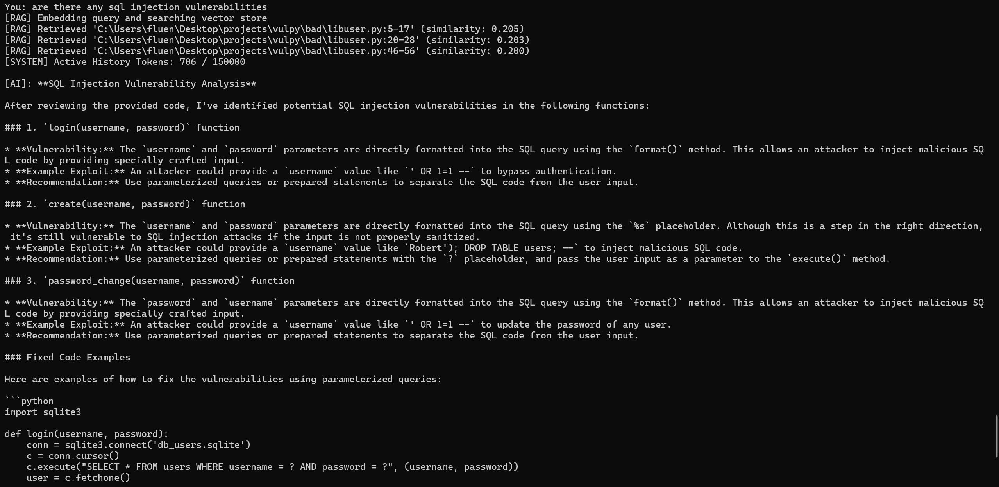
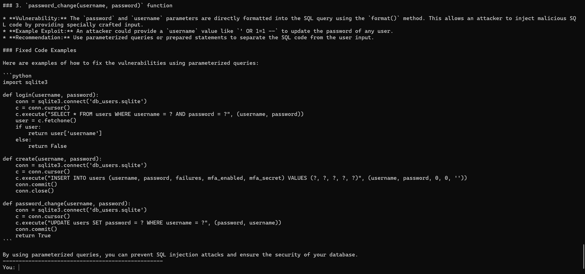

← Back to portfolio
Repo Security Auditor
An AI codebase security auditor with a RAG pipeline. Ask questions about any codebase in plain English — it chunks the repo along function/class boundaries, embeds and indexes it locally, and answers multi-turn questions with re-ranked code context, streaming responses, and automatic conversation compaction as the chat grows.


